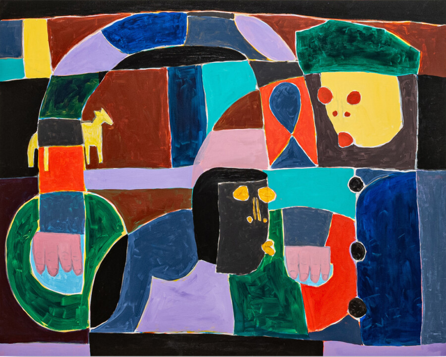

Taj Matumbi: The Lower World
Devening Projects is pleased to present The Lower World, the first solo exhibition of recent paintings and drawings by Madison, Wisconsin-based artist Taj Matumbi. The exhibition opens with a reception for the artist on Sunday, March 22 and continues through April 25, 2O26.
Raised in Northern California and shaped by skating culture, Matumbi found in skateboarding his earliest form of self-expression. The discipline’s commitment to style and speed continue to inform his painting practice. Like the subtle variations in landing a hundred kickflips, his process involves creating multiple versions of a painting—seeking consistency while embracing change. Prior to working figuratively, his practice was rooted in intuitive and formal abstraction. In graduate school, he began a drawing practice based on childhood characters from memory, developing a generative archive of compositional studies that would later inform his paintings.
Through repetition and variation, Matumbi has developed a language of shallow, abstract figuration that blends autobiography, art history and American history. The paintings in The Lower World use an emergent formal vocabulary to explore night as a space of moral ambiguity, psychological projection and compressed narrative. Influenced by Hieronymus Bosch and Bob Thompson, the works interrogate Renaissance humanist ideals surrounding morality and spirituality — particularly their contradictions and failures. Night becomes the setting in which these values destabilize, remaining culturally resonant within the contemporary moment.
Taj Matumbi earned an MFA in Painting from the University of Wisconsin–Madison (2O21) and a BFA in Ceramics and Painting from Maharishi International University (2O18). He has presented two solo museum exhibitions, including at the Museum of Wisconsin Art’s satellite gallery in Milwaukee and at the Paul R. Jones Museum at the University of Alabama, Tuscaloosa (2O25). In 2O25, he also participated in the Madison Museum of Contemporary Art Triennial and presented a solo exhibition at SooVac Gallery in Minneapolis. His paintings were featured recently in the Madison Museum of Wisconsin Art Triennial and is currently on view at the 2O26 Museum of Wisconsin Art Biennial.
Taj Matumbi’s work is held in the permanent collections of the Montgomery Museum of Fine Arts; the Paul R. Jones Museum, Tuscaloosa; the Wiregrass Museum of Art; and the Louisiana State University Museum of Art.